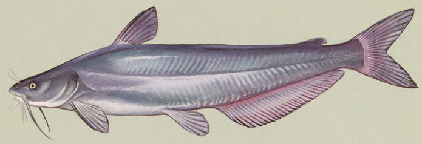
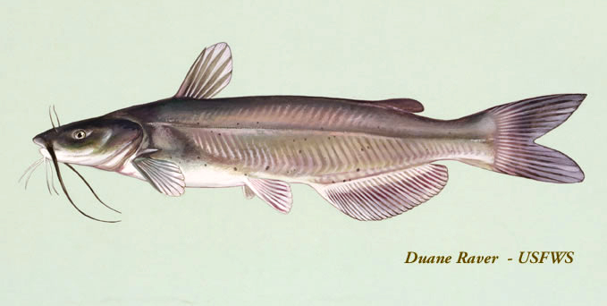

Ictalurus: North American catfishes
Identification:
- Forked caudal fin
- Largest two catfish!
Ictalurus furcatus
Blue catfish

Identification:
- More anal rays (30-35) than channel cat
- Lighter barbells than Channel cat
Ictalurus punctatus
Channel catfish

Identification:
- dark spots (these fade on adults)
- less anal rays (25-29) than Blue cat
- darker barbells than Blue cat